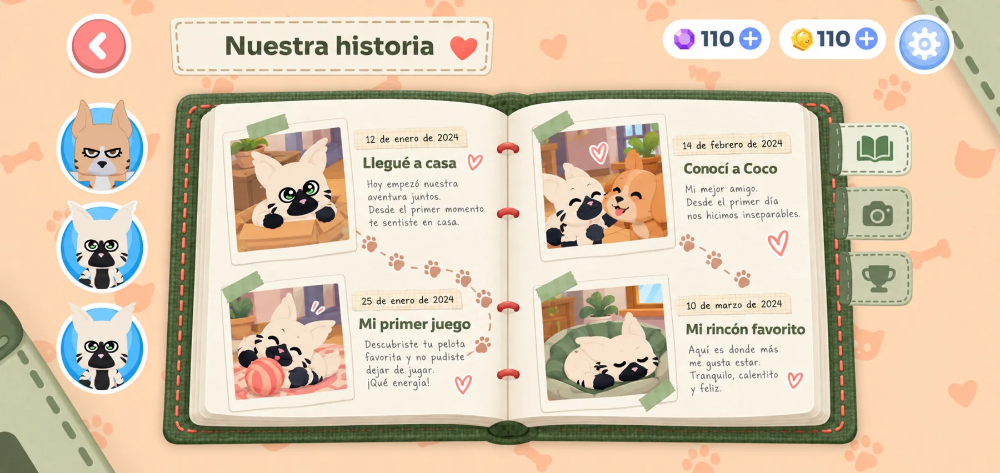
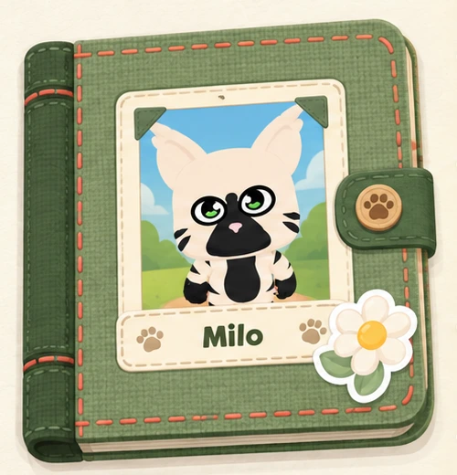
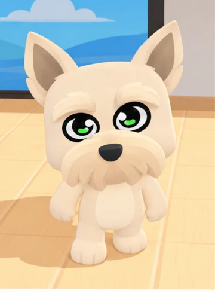
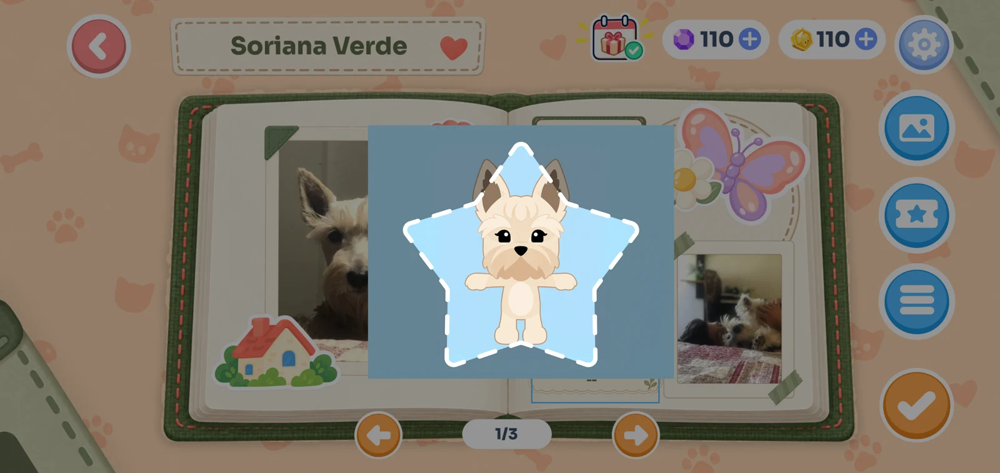
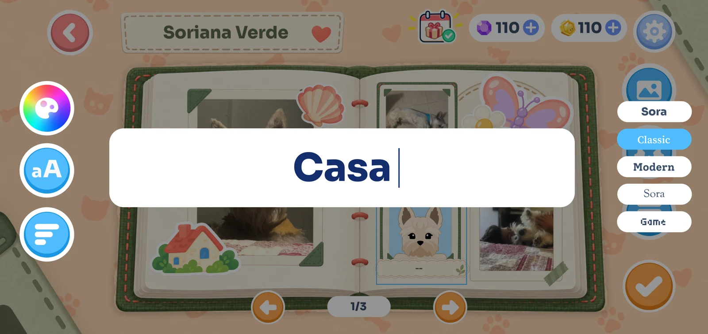
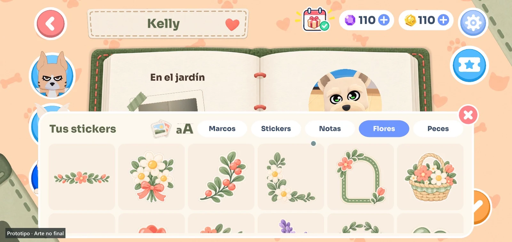
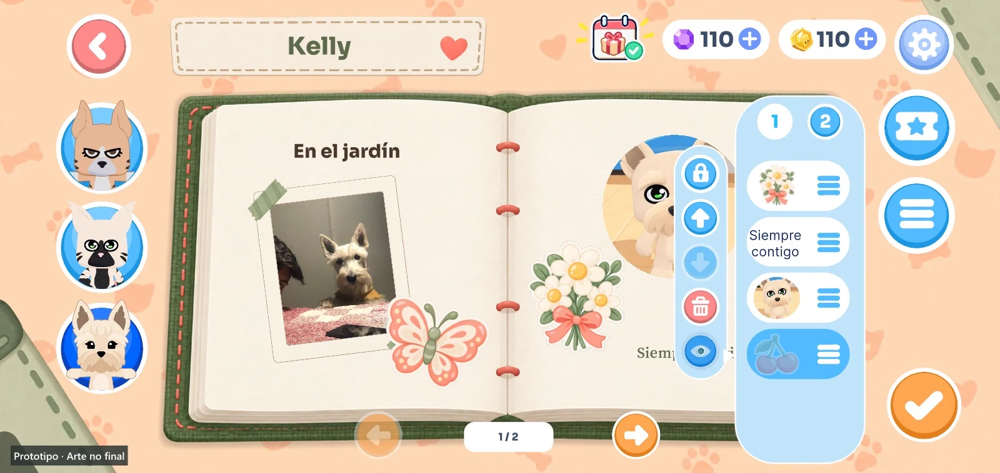
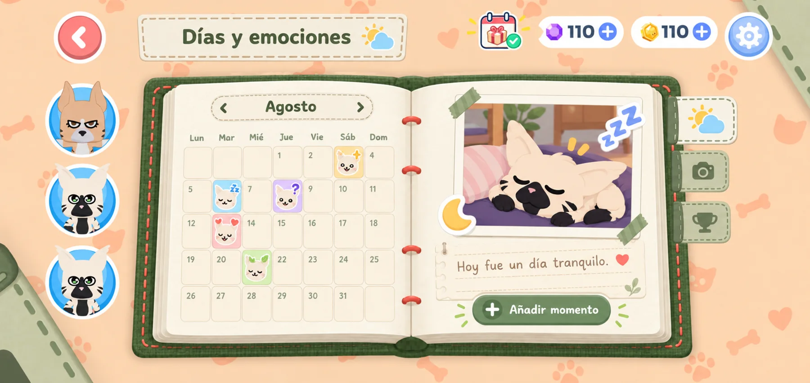

Nuestra historia
Cada entrada une una fecha, una foto y unas palabras tuyas. Así, «Llegué a casa» puede quedar junto al día en que conoció a Coco, y puedes volver a ambos momentos al hojear el álbum.

Memorial
Su primera noche en casa, la pelota que siempre buscaba o la tarde que pasó contigo en el juego. El memorial es un lugar para rendir homenaje a tu mascota y contar, a tu manera, lo que han vivido juntos.
Ver el álbum de Kelly en juego Explorar las herramientas

Modo libre · Gameplay en Unity
En una hoja cabe una foto de tu mascota. En la de enfrente puedes poner su retrato de Yunipets, escribirle una dedicatoria y mover las piezas hasta que la página cuente el recuerdo como tú lo viviste.
Al final del video, Kelly ya tiene una página de jardín y otra de pesca. El botón + abre una doble página en blanco para el siguiente recuerdo.
Empieza con una foto, escribe lo que quieres recordar y elige qué detalles van alrededor. Puedes explorar cada herramienta por separado.

La línea punteada marca el recorte. En este ejemplo, la estrella conserva el rostro y deja fuera las esquinas de la imagen. Así puedes ver qué parte del retrato quedará en la hoja antes de confirmar.

Una palabra como «Casa» puede darle título a una foto. El diseño permite elegir la letra, ajustar su tamaño y color, y alinear el texto. En el video de Kelly se ve cómo queda «Siempre contigo» junto a su retrato.

Abre la categoría Flores y elige un ramo para colocarlo junto a la foto del jardín. Para el recuerdo del lago, la categoría Peces permite decorar la hoja con los hallazgos de la salida.

El retrato, la dedicatoria y cada sticker tienen su propia capa. Las flechas cambian cuál queda delante. El ojo permite ocultar una pieza para comparar la composición y el candado la fija mientras acomodas las demás.
Diseño previsto
La propuesta parte de un estante de álbumes. Al elegir a un Yunipet, entrarás en su historia y podrás recorrer sus recuerdos por fecha o dedicarle páginas de composición libre.

Cada entrada une una fecha, una foto y unas palabras tuyas. Así, «Llegué a casa» puede quedar junto al día en que conoció a Coco, y puedes volver a ambos momentos al hojear el álbum.

La idea es elegir un día del calendario, asociarle una emoción y acompañarla con una imagen o una nota. También hay lugar para un día tranquilo en el que lo único que pasó fue una siesta juntos.